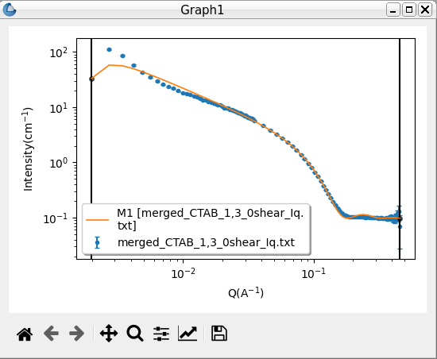
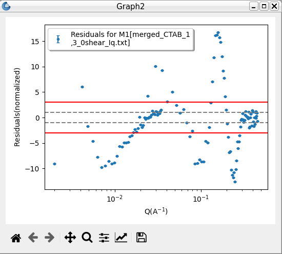
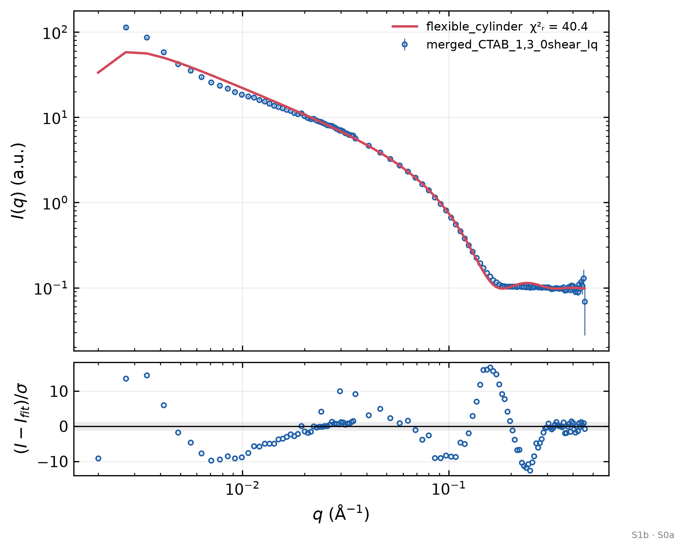
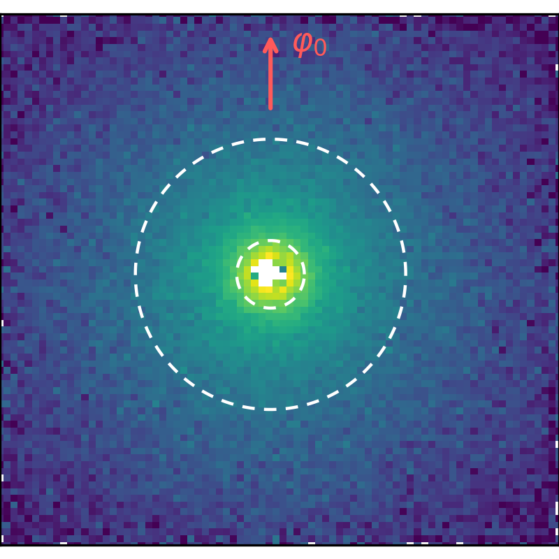
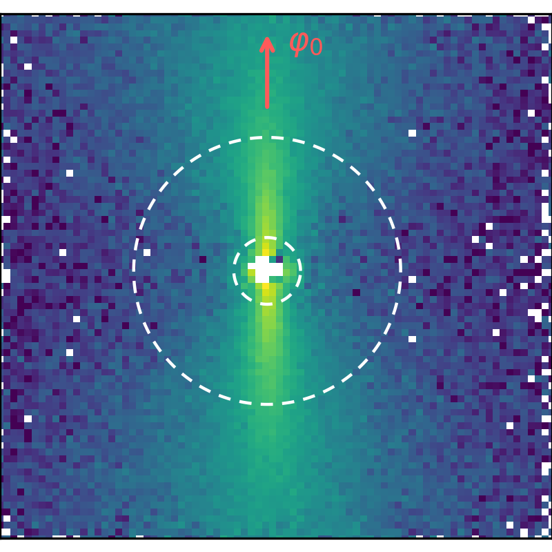
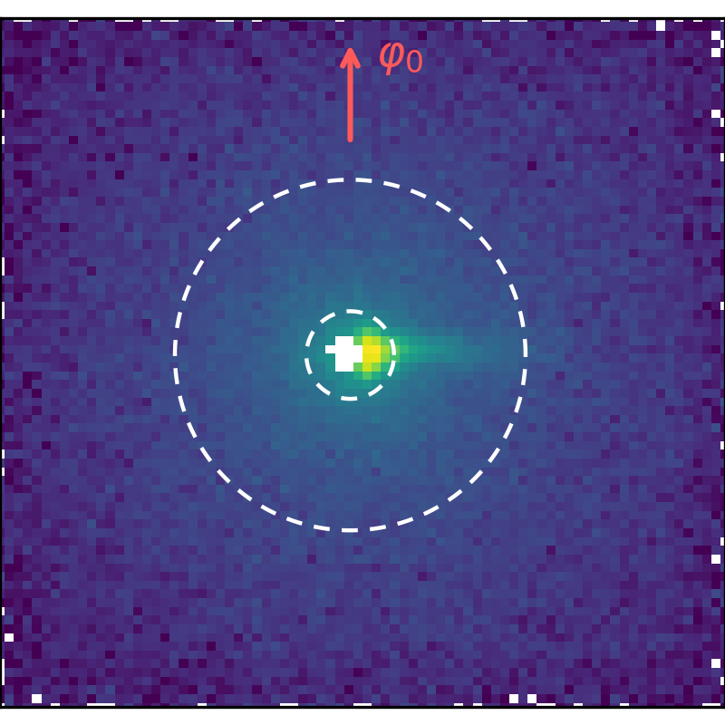
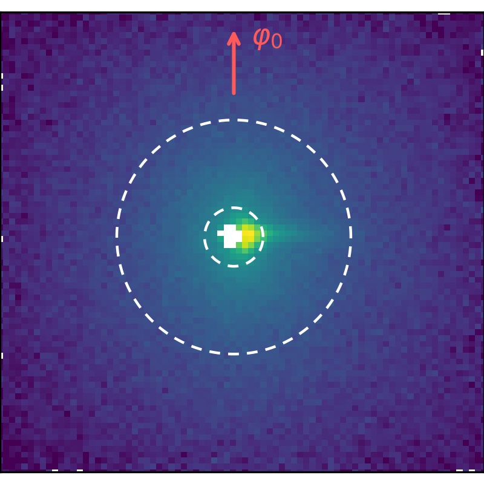
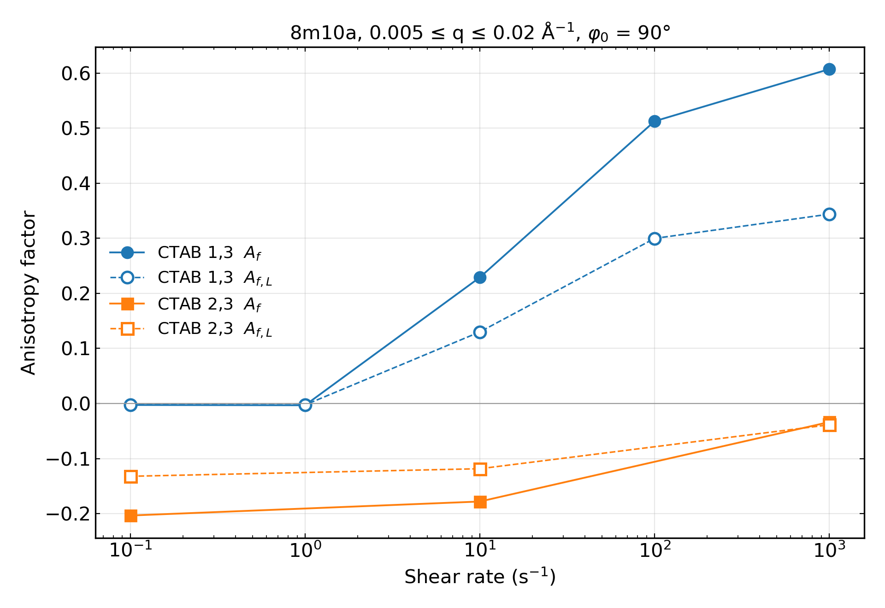

EQ-SANS Point of Contact Neutron Scattering Division, Spallation Neutron Source
ORNL is managed by UT-Battelle LLC for the US Department of Energy
Today, with the reduced data
One fit, done twice, and one number from the 2D maps
1 · BY HAND
Fit in SasView
sasview
You load the curve, pick the model, tick the parameters and press Fit.
You getA fit you watched happen
2 · BY ASKING
The same fit, asked for
sansbook
You say which data and which model. It fits, looks at the residuals and writes a page.
You getThe numbers, a verdict and a report page
3 · BEYOND I(Q)
Order parameter
sansbook
From the 2D maps: one number per shear rate for how aligned the scattering is.
You getA table, a plot and the definition in words
The data: IPTS-37681, CTAB in the cup-and-bob cell · the merged I(Q) at rest for the fit · the 8m10a 2D maps at shear 0 to 1000 for the order parameter
Before the fit
The model: a flexible cylinder
Parameter
What it is
Default
Today
scale
Height of the curve. A volume fraction only when the data are in absolute units.
1
fit
background
Flat level at high Q.
0.001
fit
length
Contour length L.
1000 Å
fit
kuhn_length
Kuhn length b, twice the persistence length.
100 Å
fit
radius
Radius R of the cross-section.
20 Å
fit
sld sld_solvent
Scattering length densities of the chain and of the solvent, in 10⁻⁶ Å⁻².
1.0 6.3
fixed
SasView calls the worm-like chain flexible_cylinder, in the category Cylinder. Our intensities are relative (a.u.), so only the shape of the curve carries information.
CTAB at rest, 1,3 plane · flexible_cylinder · the full Q range
Same data, same model, same numbers
SasView by hand


sansbook by asking

SasView
sansbook
χ²
40.381
40.38
radius Å
21.059 ± 0.009
21.059 ± 0.009
scale
0.018068 ± 0.000013
0.018068 ± 0.000013
background
0.09754 ± 0.00018
0.09754 ± 0.00018
kuhn_length Å
1916 ± 117
1913 ± 278
length Å
2.4 ± 6.8
10 ± 653 at its limit
Both use the same engine, sasmodels with a Levenberg–Marquardt fit, so they agree. Radius, scale and background are solid.Length and Kuhn length are not: the residuals swing by ±15 σ, and the length ran to wherever it was allowed to go. sansbook said so itself and closed the page as dead; its next step: “choose a justified alternative model or q range”.
8m10a 2D maps · I(φ) from 0.005 ≤ q ≤ 0.02 Å⁻¹ · as in anisotropicfactor_template.xlsx
I(φ): 100 bins of 3.6°, mean of the pixels between the dashed circles · φ0 = 90°, along +qy · positive = intensity along qy, 0 = none preferred, negative = along qx

1,3 · at rest−0.004

1,3 · 10000.607

2,3 · at rest−0.209

2,3 · 1000−0.034
Af under each map. In 1,3 the alignment grows with the shear rate and is gone again when the shear stops (−0.001). The 2,3 maps are anisotropic already at rest, so read their change, not their value.

Thank you
Changwoo Do · EQ-SANS
Spallation Neutron Source, Oak Ridge National Laboratory